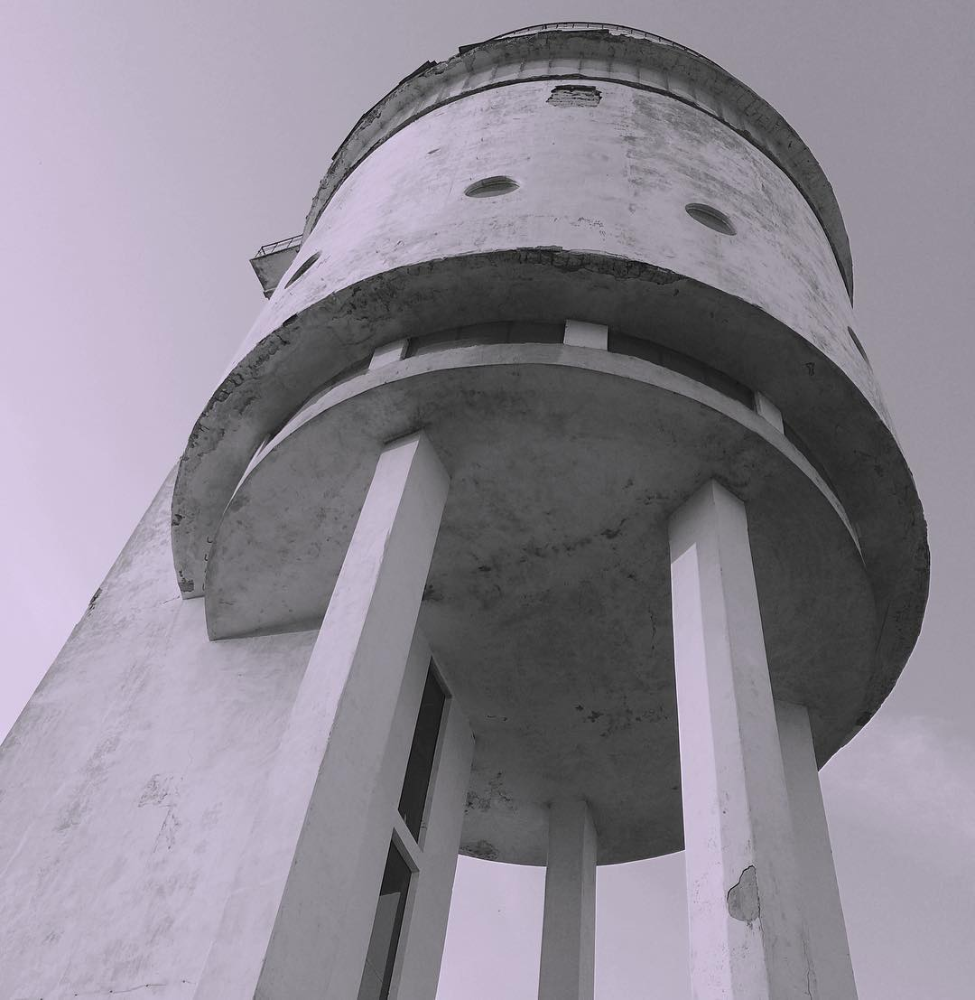

Белая башня - памятник конструктивизма.
Белая башня — один из ключевых памятников архитектуры конструктивизма, имеет мировое признание как памятник архитектуры авангарда и является одним из символов Уралмаша. Башня была построена в 1929—1931 годах по проекту архитектора Моисея Рейшера, стала одним из первых железобетонных сооружений Свердловска. Исторически планировалось дополнить архитектурный ансамбль района зданием стадиона в схожем стиле, которое спроектировал Пётр Оранский, однако проект не был воплощён.
С развитием городской водопроводной сети в 1960-х годах башня была выведена из эксплуатации, долгие годы не использовалась и ветшала. В сентябре 2012 года Территориальное управление Росимущества по УрФО передало постройку в безвозмездное пользование архитектурной группе Podelniki, которая организовала консервацию и постепенное восстановление объекта.
История создания Белой башни
Белая башня памятник архитектуры конструктивизма, в настоящее время используется как культурная площадка. Башня была построена в 1929—1931 годах по проекту архитектора Моисея Рейшера, стала одним из первых железобетонных сооружений Свердловска и неофициальным символом района Уралмаш.
15 июля 1928 года на севере Свердловска был торжественно заложен фундамент будущего цеха металлоконструкций Уральского завода тяжёлого машиностроения. Вместе со строительством производственных корпусов началось возведение рабочего городка по проекту, разработанному специальным отделом Уралмашстроя. Масштабная стройка вскоре столкнулась с дефицитом воды. Первоначально воду доставляли на лошадях из колодцев у реки Камышинка, но её качество не соответствовало требованиям.
Существуют сведения о строительстве временного водопровода от ручья Калиновка. Эти поставки воды не могли удовлетворить растущие потребности стройки и городка, и руководство Уралмаша стало искать другие пути решения проблемы. В это время профессор-гидрогеолог Модест Клер предположил наличие на берегу озера Шувакиш на глубине около 50 метров бассейна с запасом артезианской воды, откуда можно было бы добывать до 5000 м³ воды в сутки. К натурным исследованиям Клера не допустили из-за «непролетарского происхождения» (его отец был швейцарским учёным, эмигрировавшим в Российскую империю), и для разработки месторождений пригласили специалистов Высокогорского рудоуправления во главе с гидрогеологом Александром Тутуниным. Пробурив восемь тестовых скважин, исследователи обнаружили воду на глубине 80—100 метров.
Проект и строительство башни
В конце 1928 года руководитель проектного отдела Иосиф Иоакимович Робачевский при поддержке главного инженера строительства УЗТМ Владимира Фидлера предложил построить для Уралмаша водонапорную башню по индивидуальному проекту. Работать надо было быстро, поэтому членам отдела выделили всего неделю на разработку проектного плана. В конкурсе приняли участие архитекторы Пётр Оранский, Виктор Безруков и Моисей Рейшер, которому и досталась победа. В качестве основного материала он предложил использовать новый на тот момент железобетон, благодаря чему конструкция получилась лёгкой и выделялась на фоне остальных конкурсных проектов.
При металлическом баке перекрытие пришлось опирать на наружные стены отепления бака. Появился свод, добавилась тяжесть еще двухметровой бетонной стены, и всё это легло на консоли большого выноса, в связи с чем они получились очень мощными.
Конвейер, по которому течет здесь нормированная жизнь, напоминает прусскую казарму <…> Нет нужды доказывать абстрактную утопичность и ошибочную социальную сущность всех этих проектов. <…> Нельзя не заметить во всей этой программе механического процесса увеличения до астрономических размеров молекулярных элементов бытового уклада старой семьи.
Московское конструкторское бюро «Техбетон» под руководством инженера Сергея Прохорова готовило итоговые чертежи и руководило строительством. Ответственным за работу на площадке был М. Струков. Чертежи сварного металлического бака выполнило проектное бюро Уралмашстроя по системе немецкого инженера Отто Интце, а изготовлением руководил С. Коротков. Бак стал первой в городе стальной конструкцией выполненной техникой электросварки, а не клёпки. Работы были поручены сварщику Владимиру Вольнову и группе молодых рабочих, которые справились с задачей за пять месяцев. Оценку выполненной работы доверили профессору Валентину Вологдину и другим видным специалистам.
Эксплуатация
Осенью 1931 года руководство Уралмаша объявило об окончательном решении проблемы водоснабжения: артезианская вода не требовала очистки и на всех магистралях от башни давление достигло четырёх атмосфер. Уже в 1932 году на озере Шувакиш пробурили четыре дополнительные скважины, когда стали поступать жалобы на упавшее давления, а от Верхне-Исетского пруда был проброшен временный водовод. Чтобы исследовать оставшиеся запасы воды на Шувакиш пригласили гидрогеологов, они пришли к выводу, что подземные резервуары истощены из-за чрезмерного забора и рекомендовали сократить потребление.
Потребление воды росло с ростом завода и жилищного массива. К 1940 году, когда жилая территория достигла 15 км², более 80 % воды поступало из Верхне-Исетского пруда. Во время реконструкции сетей водоснабжения в Свердловске в послевоенные годы стало понятно, уже скоро Белая башня утратит своё функциональное значение. Насосные станции на озере Шувакиш были выведены из эксплуатации в 1940-х годах, а насосное оборудование демонтировали в начале 1960-х.
- Башня была выведена из эксплуатации в 1960-х годах.
- В 1970 году Белая башня была включена в список памятников советского строительства.
- В 1974 году Белую башню признали памятником архитектуры государственного значения, и через год институт «Свердловскгражданпроект» провёл конкурс на проект приспособления сооружения под другие назначения, но это также не получило развития.
- В 2000 году страховая компания была ликвидирована, её наименование и товарный знак перешли страховому брокеру.
Есть данные, что в 1937 году НКВД открыло уголовное дело против Фидлера, его обвиняли в сознательном сокрытии маловодья на Шувакише, что привело к напрасной трате денег и нехватке питьевой воды. Но потом комиссариат выяснил, что инженер скончался в 1932 году, и дело закрыли.
«...на расстояниях, равных длине камня, укладывались доски, подпертые деревянными стойками. На доски клались камни со специально оставляемыми промежутками. В промежутки укладывалась арматура, и все перекрытие бетонировалось. Получалась плита (5 см) с балками и промежутками, заполненными бетонными камнями».
Закрытие станции и судьба башни
Башня была выведена из эксплуатации в 1960-х годах. После этого вопрос о переоборудовании и сохранении комплекса поднимали разные инстанции, в том числе автор проекта, но меры не принимались, и здание ветшало. В 1970 году Белая башня была включена в список памятников советского строительства, которые надлежало взять под государственную охрану.
Через год Рейшер совместно с группой художников представил проект кафе на 100 мест, под него отводилось пространство резервуара, над ним на крыше предлагалось устроить смотровую площадку с киосками «Мороженое — воды» (существует версия, что Рейшер подготовил этот проект ещё в 1942 году). Администрация Орджоникидзевского района одобрила предложение, дирекция Уралмашстроя была готова спонсировать проект, но он не был реализован: против был главный архитектор Свердловска Геннадий Белянкин, проект списали из-за несоответствия нормам пожарной безопасности. Рейшер вспоминал, что «проект застрял у главного архитектора Свердловска Г. И. Белянкина и не может найти дверь для выхода».
Архитектурные особенности
Белая башня считается выдающимся примером промышленной архитектуры периода конструктивизма. Расположенная на возвышенности 29-метровая башня замыкала перспективу бульвара Культуры и служила пространственной доминантой района, на которую были ориентировали все окрестные сооружения. Исторически планировалось дополнить архитектурный ансамбль района зданием стадиона в схожем стиле, которое спроектировал Пётр Оранский, однако проект не был воплощён. Но уже в 1970-х годах в районе Уралмаш возвели одноимённый дом культуры, который перекрыл вид на водонапорную башню.
Конструкция башни представлена двумя основными объёмами: цилиндрической частью с диаметром основания 13,5 метров, и вертикальным параллелепипедом, вмещающим лестничную клетку. Длина параллелепипеда — 5,75 метра, ширина — 3,2 метра. Внутри цилиндрического объёма расположен сужающийся к основанию бак с вогнутым дном, который через кольцевую монолитную железобетонную балку шириной 0,6 метра опирается на четыре наружные колонны и две внутрилестничные.
Резервуар для воды стянут тремя железобетонными кольцами, расположенными на равном удалении друг от друга. Цилиндр поддерживают шесть массивных консолей, которые крепятся к основным опорным колоннам и снабжены вертикалтьными ригелями, перераспределяющими нагрузку и повышающими жёсткость опорного кольца в горизонтальном направлении.